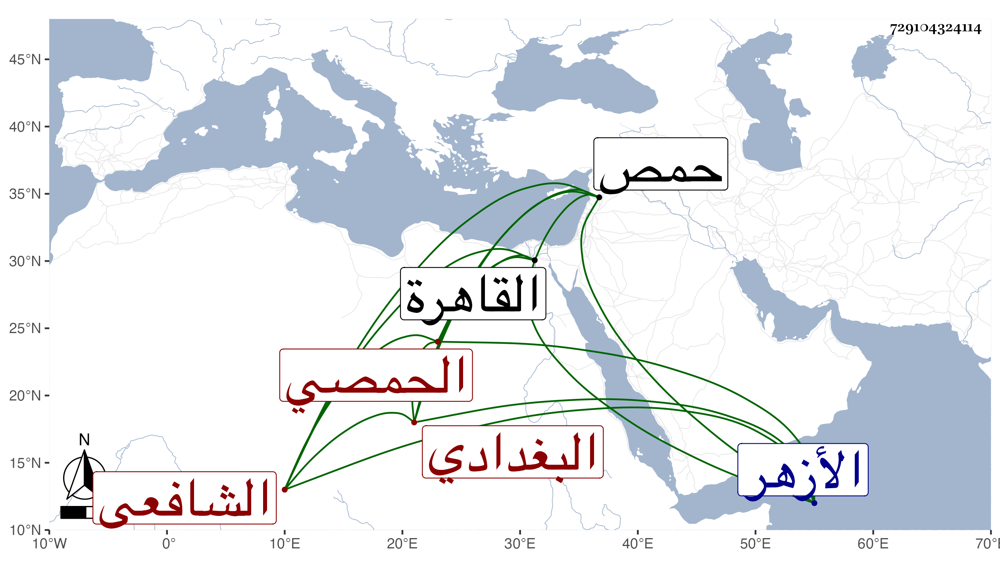

0902Sakhawi.DawLamic.ITO20230111-ara1.EIS1600.729104324114
Biography ID: 729104324114
335
محمد بن محمد بن عبد الملك بن محمد الشمس بن الحاج أبي عبد الله البغدادي الأصل الحمصي الشافعي والد عبد الغفار وعبد الملك الماضيين ويعرف بابن السقا . ولد في ليلة الجمعة مستهل ذي القعدة سنة سبع وأربعين وثمانمائة بحمص ونشأ بها فحفظ القرآن والغاية لأبي شجاع والكتب التي بينتها في ثاني ولديه ، وحج في سنة أربع وستين وقدم القاهرة في سنة ست وستين فاشتغل في الأزهر على السنتاوي وابن الوروري والطنتدائي الضرير ونحوهم وعرض علي في جملة الجماعة وسمع مني المسلسل وغيره كبعض مجالس الإملاء وقرأ في سنة إحدى وسبعين على الديمي في البخاري وألفية العراقي وتميز وكتب الخط الجيد ونسخ به أشياء .
